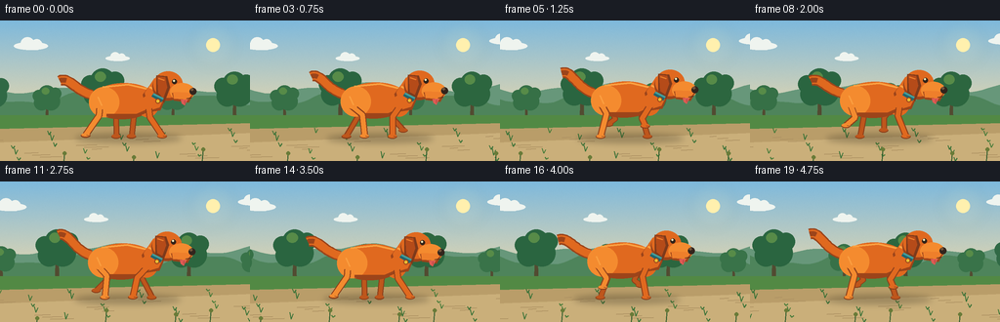
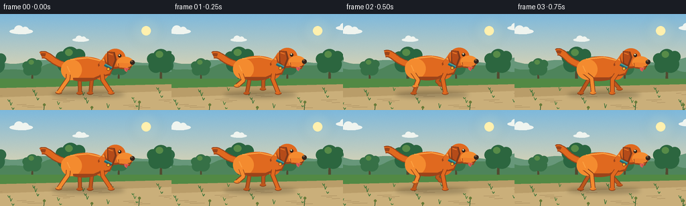

CODING AGENTS AS PIXEL WORLD MODELS
traex/GPT-5.6-Sol · instance_preservation_0000
点击播放 · 原生 RGB 像素
逐轮保存的候选
回放视频、检查图与代码变化。
每份候选均可单独播放。实际图片检查记录在下方工具轨迹中。
候选 01播放与检查图
点击播放 · 原生 RGB 像素


展开代码变化
--- 上一保存版本
+++ 本次保存版本
@@ -0,0 +1,269 @@
+from pathlib import Path
+import math
+import numpy as np
+from PIL import Image, ImageDraw, ImageFilter
+import artifact_io
+
+# Procedural text-to-video rendering. All geometry is generated locally from prompt.txt.
+W, H, N, FPS = 256, 144, 20, 4.0
+S = 3
+OUT = Path(__file__).resolve().parent
+rng = np.random.default_rng(81273)
+
+
+def sc(v):
+ return int(round(v * S))
+
+
+def pts(seq):
+ return [(sc(x), sc(y)) for x, y in seq]
+
+
+def ellipse(draw, box, fill, outline=None, width=1):
+ draw.ellipse(tuple(sc(v) for v in box), fill=fill, outline=outline, width=sc(width) if outline else 1)
+
+
+def polygon(draw, seq, fill):
+ draw.polygon(pts(seq), fill=fill)
+
+
+def line(draw, seq, fill, width, joint="curve"):
+ draw.line(pts(seq), fill=fill, width=sc(width), joint=joint)
+
+
+def bezier(p0, p1, p2, p3, steps=20):
+ arr = []
+ for t in np.linspace(0, 1, steps):
+ q = 1-t
+ arr.append((q**3*p0[0]+3*q*q*t*p1[0]+3*q*t*t*p2[0]+t**3*p3[0],
+ q**3*p0[1]+3*q*q*t*p1[1]+3*q*t*t*p2[1]+t**3*p3[1]))
+ return arr
+
+
+def gradient_background(frame_i):
+ # A quiet sunrise park with slow three-layer parallax.
+ yy = np.linspace(0, 1, H*S)[:, None, None]
+ top = np.array([126, 185, 220], dtype=float)[None,None,:]
+ bot = np.array([246, 220, 167], dtype=float)[None,None,:]
+ a = np.clip(yy / .78, 0, 1)
+ base = top*(1-a) + bot*a
+ base = np.repeat(base, W*S, axis=1)
+ # Fine, fixed film-like texture prevents a sterile vector appearance.
+ noise = rng.normal(0, 1.15, (H*S, W*S, 1))
+ base = np.clip(base + noise, 0, 255).astype(np.uint8)
+ im = Image.fromarray(base, "RGB")
+ d = ImageDraw.Draw(im)
+
+ # Sun and soft halo.
+ sunx, suny = 218, 25
+ halo = Image.new("RGBA", im.size, (0,0,0,0))
+ hd = ImageDraw.Draw(halo)
+ for r, alpha in [(24,8),(17,12),(11,20)]:
+ hd.ellipse((sc(sunx-r),sc(suny-r),sc(sunx+r),sc(suny+r)), fill=(255,241,183,alpha))
+ halo = halo.filter(ImageFilter.GaussianBlur(sc(5)))
+ im = Image.alpha_composite(im.convert("RGBA"),halo).convert("RGB")
+ d = ImageDraw.Draw(im)
+ ellipse(d,(211,18,225,32),(255,240,174))
+
+ # Wispy clouds drift almost imperceptibly.
+ cloud_shift = -(frame_i * .18) % 310
+ for cx, cy, scale in [(31,25,1.0),(120,38,.7),(280,20,.85)]:
+ x = ((cx + cloud_shift + 35) % 330) - 35
+ col=(239,244,239)
+ ellipse(d,(x-17*scale,cy-3*scale,x+18*scale,cy+5*scale),col)
+ ellipse(d,(x-10*scale,cy-8*scale,x+4*scale,cy+5*scale),col)
+ ellipse(d,(x+1*scale,cy-6*scale,x+12*scale,cy+5*scale),col)
+
+ # Distant rolling hills.
+ far = frame_i * .45
+ ridge=[]
+ for x in range(-20, 281, 6):
+ xx=x-far
+ y=69 + 4*math.sin((xx+15)/27) + 2*math.sin(xx/11)
+ ridge.append((x,y))
+ polygon(d, ridge+[(280,102),(-20,102)], (103,151,122))
+ ridge2=[]
+ for x in range(-20,281,5):
+ xx=x-frame_i*.8
+ y=80 + 5*math.sin(xx/18) + 2*math.cos(xx/8)
+ ridge2.append((x,y))
+ polygon(d,ridge2+[(280,113),(-20,113)],(78,132,91))
+
+ # Midground trees, repeating landscape scrolls left while camera tracks dog.
+ scroll = frame_i * 4.25
+ for base_x, scale, col in [(-10,1.0,(48,105,69)),(48,.78,(54,112,70)),(105,1.15,(42,101,64)),
+ (177,.83,(55,113,72)),(240,1.08,(44,102,63)),(307,.74,(57,115,73))]:
+ x = base_x-scroll
+ while x < -40: x += 360
+ while x > 310: x -= 360
+ y0=103
+ # trunk
+ polygon(d,[(x-2*scale,y0),(x+2*scale,y0),(x+1.3*scale,y0-25*scale),(x-1*scale,y0-25*scale)],(82,75,49))
+ for ox,oy,r in [(-7,-24,10),(5,-26,12),(0,-36,11),(-11,-33,8),(11,-36,8)]:
+ ellipse(d,(x+(ox-r)*scale,y0+(oy-r)*scale,x+(ox+r)*scale,y0+(oy+r)*scale),col)
+ # warm lit leaf clumps
+ ellipse(d,(x-7*scale,y0-44*scale,x+3*scale,y0-35*scale),(87,139,72))
+
+ # Meadow and running path.
+ polygon(d,[(-5,97),(261,97),(261,145),(-5,145)],(82,137,68))
+ polygon(d,[(-5,111),(261,105),(261,145),(-5,145)],(185,157,105))
+ polygon(d,[(-5,125),(261,115),(261,145),(-5,145)],(202,175,122))
+ # Path streaks indicate speed without blurring the dog.
+ for j in range(18):
+ y=119+(j*17)%25
+ x=((j*53-frame_i*13.5)%310)-28
+ length=7+(j*7)%19
+ line(d,[(x,y),(x+length,y-.6)],(173,145,98),1)
+ # Foreground grass tufts, fastest parallax.
+ for j in range(28):
+ x=((j*37 + 11 - frame_i*8.5)%330)-35
+ y=112+(j*19)%33
+ h=2+(j*7)%6
+ c=(60,115,56) if j%3 else (72,124,58)
+ line(d,[(x,y),(x-1.5,y-h)],c,1)
+ line(d,[(x,y),(x+2,y-h*.75)],c,1)
+ return im
+
+
+def gait_foot(anchor_x, phase, ground=119):
+ # 57% planted stride, 43% tucked recovery. This reads cleanly at 4 fps.
+ u = phase % 1.0
+ if u < .57:
+ q=u/.57
+ return anchor_x + 14 - 29*q, ground + .35*math.sin(q*math.pi)
+ q=(u-.57)/.43
+ return anchor_x - 15 + 29*q, ground - 12*math.sin(q*math.pi)
+
+
+def draw_leg(d, anchor, phase, kind, near, ground, orange):
+ ax, ay = anchor
+ fx, fy = gait_foot(ax,phase,ground)
+ # Knee/elbow bends backward on forelegs, forward on hindlegs during recovery.
+ swing = max(0.0, ground-fy)
+ if kind == "front":
+ kx = ax + .42*(fx-ax) - 4.5 - .18*swing
+ ky = ay + 11 + .30*swing
+ else:
+ kx = ax + .43*(fx-ax) + 5.5 + .12*swing
+ ky = ay + 9 + .36*swing
+ col = orange if near else (190,86,28)
+ edge = (139,63,27)
+ # Dark edge under the limb lends definition, then a rounded orange stroke.
+ line(d,[(ax,ay),(kx,ky),(fx,fy-1)],edge,7 if near else 6)
+ line(d,[(ax,ay),(kx,ky),(fx,fy-1)],col,5 if near else 4)
+ ellipse(d,(fx-5,fy-2.6,fx+4.5,fy+1.8),edge)
+ ellipse(d,(fx-4.5,fy-2.8,fx+4,fy+.7),col)
+ if near:
+ line(d,[(fx+1,fy-1),(fx+3.2,fy-.6)],(97,54,32),.7)
+
+
+def render_dog(im, fi):
+ d=ImageDraw.Draw(im)
+ phase=(fi/7.0)%1.0
+ # Smooth running bob and slight forward/back camera-tracking drift.
+ bob=-1.8*abs(math.sin(2*math.pi*phase))
+ xoff=2.0*math.sin(2*math.pi*fi/19)
+ yoff=bob
+ ox=124+xoff
+ # soft contact shadow varies with aerial phase
+ shadow=Image.new("RGBA",im.size,(0,0,0,0))
+ sd=ImageDraw.Draw(shadow)
+ airborne=max(0, -bob)
+ sd.ellipse((sc(77+xoff),sc(116+airborne*.25),sc(186+xoff),sc(125+airborne*.25)), fill=(52,45,30,75))
+ shadow=shadow.filter(ImageFilter.GaussianBlur(sc(3)))
+ im.alpha_composite(shadow) if im.mode=="RGBA" else None
+ if im.mode != "RGBA":
+ im.paste(Image.alpha_composite(im.convert('RGBA'),shadow).convert('RGB'))
+ d=ImageDraw.Draw(im)
+
+ orange=(224,105,31); light=(244,139,47); highlight=(251,160,65); dark=(156,68,26)
+ ground=119
+ # Coordinates relative to a stable, recognizable dog body.
+ def P(x,y): return (x+xoff,y+yoff)
+
+ # Far legs behind torso.
+ draw_leg(d,P(146,88),phase+.50,"front",False,ground,(190,84,28))
+ draw_leg(d,P(109,89),phase+.08,"hind",False,ground,(190,84,28))
+
+ # Upright, lively curved tail with a dark tip and wag that does not alter identity.
+ wag=4.0*math.sin(2*math.pi*phase+.7)
+ tail_curve=bezier(P(94,76),P(77,72),P(71,55+wag),P(61,59+wag),22)
+ line(d,tail_curve,dark,11)
+ line(d,tail_curve,orange,8)
+ line(d,tail_curve[-6:],dark,5)
+
+ # Body: elongated athletic silhouette with consistent white-free orange coat.
+ ellipse(d,(P(91,66)[0],P(91,66)[1],P(158,101)[0],P(158,101)[1]),dark)
+ ellipse(d,(P(94,64)[0],P(94,64)[1],P(160,98)[0],P(160,98)[1]),orange)
+ # haunch and chest volume
+ ellipse(d,(P(91,68)[0],P(91,68)[1],P(122,99)[0],P(122,99)[1]),light)
+ ellipse(d,(P(139,69)[0],P(139,69)[1],P(163,99)[0],P(163,99)[1]),orange)
+ # back highlight and belly shading
+ line(d,[P(105,68),P(131,65.5),P(151,70)],highlight,2)
+ line(d,[P(109,97),P(140,97),P(154,91)],dark,3)
+
+ # Neck angled into head.
+ polygon(d,[P(146,76),P(157,61),P(175,67),P(164,92),P(151,94)],dark)
+ polygon(d,[P(148,74),P(158,59),P(175,66),P(163,89),P(153,92)],orange)
+ line(d,[P(153,68),P(169,76)],highlight,2)
+
+ # Head / forehead / long friendly muzzle.
+ ellipse(d,(P(156,54)[0],P(156,54)[1],P(187,82)[0],P(187,82)[1]),dark)
+ ellipse(d,(P(157,52)[0],P(157,52)[1],P(187,79)[0],P(187,79)[1]),orange)
+ ellipse(d,(P(174,64)[0],P(174,64)[1],P(199,82)[0],P(199,82)[1]),light)
+ # lower jaw
+ polygon(d,[P(176,74),P(198,75),P(193,84),P(178,82)],dark)
+ polygon(d,[P(177,73),P(198,74),P(192,81),P(178,80)],(238,127,43))
+
+ # Floppy near ear, always same size and placement, with subtle bounce.
+ ear_bounce=1.4*math.sin(2*math.pi*phase+1.3)
+ polygon(d,[P(160,56),P(171,57),P(174,67+ear_bounce),P(168,83+ear_bounce),P(160,77)],(126,58,27))
+ polygon(d,[P(161,57),P(169,58),P(171,67+ear_bounce),P(167,78+ear_bounce),P(162,74)],(181,75,25))
+ line(d,[P(162,59),P(168,61)],(239,126,43),1.2)
+
+ # Collar: strong continuity cue.
+ line(d,[P(156,76),P(166,82)],(31,102,111),4)
+ line(d,[P(157,75),P(167,80)],(67,157,154),2)
+ ellipse(d,(P(159,80)[0],P(159,80)[1],P(164,85)[0],P(164,85)[1]),(233,191,52),dark,1)
+
+ # Face details, friendly alert expression.
+ ellipse(d,(P(176,60)[0],P(176,60)[1],P(181,65)[0],P(181,65)[1]),(48,35,25))
+ ellipse(d,(P(177,60.5)[0],P(177,60.5)[1],P(179,62.5)[0],P(179,62.5)[1]),(255,243,190))
+ ellipse(d,(P(194,69)[0],P(194,69)[1],P(201,76)[0],P(201,76)[1]),(51,37,29))
+ ellipse(d,(P(195,69.5)[0],P(195,69.5)[1],P(198,72)[0],P(198,72)[1]),(116,85,59))
+ line(d,[P(191,80),P(196,79)],(75,41,26),1)
+ # little tongue appears consistently enough to add life
+ polygon(d,[P(185,81),P(192,81),P(189,87),P(186,85)],(222,91,83))
+ line(d,[P(189,82),P(189,85)],(166,64,66),.7)
+
+ # Near legs over the body complete readable running gait.
+ draw_leg(d,P(152,88),phase,"front",True,ground,orange)
+ draw_leg(d,P(102,88),phase+.58,"hind",True,ground,light)
+
+ # shoulder/haunch highlights obscure top joins naturally
+ ellipse(d,(P(145,77)[0],P(145,77)[1],P(158,91)[0],P(158,91)[1]),orange)
+ ellipse(d,(P(96,75)[0],P(96,75)[1],P(110,91)[0],P(110,91)[1]),light)
+ line(d,[P(100,78),P(104,87)],highlight,1.3)
+ return im
+
+
+def main():
+ frames=[]
+ for i in range(N):
+ im=gradient_background(i)
+ im=render_dog(im,i)
+ # tiny foreground seed heads add depth, but never occlude face.
+ d=ImageDraw.Draw(im)
+ for j in range(5):
+ x=((j*71+24-i*9)%320)-30
+ y=132+(j%3)*4
+ line(d,[(x,y+12),(x+1,y)],(45,91,44),1)
+ ellipse(d,(x-1,y-2,x+3,y+2),(105,123,56))
+ im=im.resize((W,H),Image.Resampling.LANCZOS)
+ frames.append(np.asarray(im,dtype=np.uint8))
+ frames=np.stack(frames,axis=0)
+ artifact_io.save(frames,OUT)
+ print(f"saved {frames.shape} {frames.dtype}; RGB range {frames.min()}..{frames.max()}")
+
+if __name__ == "__main__":
+ main()
候选 02播放与检查图
点击播放 · 原生 RGB 像素

展开代码变化
--- 上一保存版本
+++ 本次保存版本
@@ -9,6 +9,7 @@
S = 3
OUT = Path(__file__).resolve().parent
rng = np.random.default_rng(81273)
+SKY_TEXTURE = rng.normal(0, 1.15, (H*S, W*S, 1))
def sc(v):
@@ -49,9 +50,8 @@
base = top*(1-a) + bot*a
base = np.repeat(base, W*S, axis=1)
# Fine, fixed film-like texture prevents a sterile vector appearance.
- noise = rng.normal(0, 1.15, (H*S, W*S, 1))
- base = np.clip(base + noise, 0, 255).astype(np.uint8)
- im = Image.fromarray(base, "RGB")
+ base = np.clip(base + SKY_TEXTURE, 0, 255).astype(np.uint8)
+ im = Image.fromarray(base)
d = ImageDraw.Draw(im)
# Sun and soft halo.
候选 03播放与检查图
可观测工具轨迹
实际执行的命令与返回图片。
命令 1exit 0
/bin/bash -lc "cat prompt.txt && printf '\\n---RULES---\\n' && cat GENERATION_RULES.md && printf '\\n---SPEC---\\n' && cat task_spec.json"
命令 2exit 0
/bin/bash -lc "find . -maxdepth 2 -type f -printf '%p %s bytes\\n' | sort"
命令 3exit 0
/bin/bash -lc "which ffmpeg; which python3; python3 - <<'PY'
try:
import PIL; print('PIL',PIL.__version__)
except Exception as e: print('no PIL',e)
try:
import cv2; print('cv2',cv2.__version__)
except Exception as e: print('no cv2',e)
try:
import numpy; print('numpy',numpy.__version__)
except Exception as e: print('no numpy',e)
PY"命令 4exit 0
/bin/bash -lc 'cat artifact_io.py'
命令 5exit 0
/bin/bash -lc "cat > generate.py <<'PY'
from pathlib import Path
import math
import numpy as np
from PIL import Image, ImageDraw, ImageFilter
import artifact_io
# Procedural text-to-video rendering. All geometry is generated locally from prompt.txt.
W, H, N, FPS = 256, 144, 20, 4.0
S = 3
OUT = Path(__file__).resolve().parent
rng = np.random.default_rng(81273)
def sc(v):
return int(round(v * S))
def pts(seq):
return [(sc(x), sc(y)) for x, y in seq]
def ellipse(draw, box, fill, outline=None, width=1):
draw.ellipse(tuple(sc(v) for v in box), fill=fill, outline=outline, width=sc(width) if outline else 1)
def polygon(draw, seq, fill):
draw.polygon(pts(seq), fill=fill)
def line(draw, seq, fill, width, joint=\"curve\"):
draw.line(pts(seq), fill=fill, width=sc(width), joint=joint)
def bezier(p0, p1, p2, p3, steps=20):
arr = []
for t in np.linspace(0, 1, steps):
q = 1-t
arr.append((q**3*p0[0]+3*q*q*t*p1[0]+3*q*t*t*p2[0]+t**3*p3[0],
q**3*p0[1]+3*q*q*t*p1[1]+3*q*t*t*p2[1]+t**3*p3[1]))
return arr
def gradient_background(frame_i):
# A quiet sunrise park with slow three-layer parallax.
yy = np.linspace(0, 1, H*S)[:, None, None]
top = np.array([126, 185, 220], dtype=float)[None,None,:]
bot = np.array([246, 220, 167], dtype=float)[None,None,:]
a = np.clip(yy / .78, 0, 1)
base = top*(1-a) + bot*a
base = np.repeat(base, W*S, axis=1)
# Fine, fixed film-like texture prevents a sterile vector appearance.
noise = rng.normal(0, 1.15, (H*S, W*S, 1))
base = np.clip(base + noise, 0, 255).astype(np.uint8)
im = Image.fromarray(base, \"RGB\")
d = ImageDraw.Draw(im)
# Sun and soft halo.
sunx, suny = 218, 25
halo = Image.new(\"RGBA\", im.size, (0,0,0,0))
hd = ImageDraw.Draw(halo)
for r, alpha in [(24,8),(17,12),(11,20)]:
hd.ellipse((sc(sunx-r),sc(suny-r),sc(sunx+r),sc(suny+r)), fill=(255,241,183,alpha))
halo = halo.filter(ImageFilter.GaussianBlur(sc(5)))
im = Image.alpha_composite(im.convert(\"RGBA\"),halo).convert(\"RGB\")
d = ImageDraw.Draw(im)
ellipse(d,(211,18,225,32),(255,240,174))
# Wispy clouds drift almost imperceptibly.
cloud_shift = -(frame_i * .18) % 310
for cx, cy, scale in [(31,25,1.0),(120,38,.7),(280,20,.85)]:
x = ((cx + cloud_shift + 35) % 330) - 35
col=(239,244,239)
ellipse(d,(x-17*scale,cy-3*scale,x+18*scale,cy+5*scale),col)
ellipse(d,(x-10*scale,cy-8*scale,x+4*scale,cy+5*scale),col)
ellipse(d,(x+1*scale,cy-6*scale,x+12*scale,cy+5*scale),col)
# Distant rolling hills.
far = frame_i * .45
ridge=[]
for x in range(-20, 281, 6):
xx=x-far
y=69 + 4*math.sin((xx+15)/27) + 2*math.sin(xx/11)
ridge.append((x,y))
polygon(d, ridge+[(280,102),(-20,102)], (103,151,122))
ridge2=[]
for x in range(-20,281,5):
xx=x-frame_i*.8
y=80 + 5*math.sin(xx/18) + 2*math.cos(xx/8)
ridge2.append((x,y))
polygon(d,ridge2+[(280,113),(-20,113)],(78,132,91))
# Midground trees, repeating landscape scrolls left while camera tracks dog.
scroll = frame_i * 4.25
for base_x, scale, col in [(-10,1.0,(48,105,69)),(48,.78,(54,112,70)),(105,1.15,(42,101,64)),
(177,.83,(55,113,72)),(240,1.08,(44,102,63)),(307,.74,(57,115,73))]:
x = base_x-scroll
while x < -40: x += 360
while x > 310: x -= 360
y0=103
# trunk
polygon(d,[(x-2*scale,y0),(x+2*scale,y0),(x+1.3*scale,y0-25*scale),(x-1*scale,y0-25*scale)],(82,75,49))
for ox,oy,r in [(-7,-24,10),(5,-26,12),(0,-36,11),(-11,-33,8),(11,-36,8)]:
ellipse(d,(x+(ox-r)*scale,y0+(oy-r)*scale,x+(ox+r)*scale,y0+(oy+r)*scale),col)
# warm lit leaf clumps
ellipse(d,(x-7*scale,y0-44*scale,x+3*scale,y0-35*scale),(87,139,72))
# Meadow and running path.
polygon(d,[(-5,97),(261,97),(261,145),(-5,145)],(82,137,68))
polygon(d,[(-5,111),(261,105),(261,145),(-5,145)],(185,157,105))
polygon(d,[(-5,125),(261,115),(261,145),(-5,145)],(202,175,122))
# Path streaks indicate speed without blurring the dog.
for j in range(18):
y=119+(j*17)%25
x=((j*53-frame_i*13.5)%310)-28
length=7+(j*7)%19
line(d,[(x,y),(x+length,y-.6)],(173,145,98),1)
# Foreground grass tufts, fastest parallax.
for j in range(28):
x=((j*37 + 11 - frame_i*8.5)%330)-35
y=112+(j*19)%33
h=2+(j*7)%6
c=(60,115,56) if j%3 else (72,124,58)
line(d,[(x,y),(x-1.5,y-h)],c,1)
line(d,[(x,y),(x+2,y-h*.75)],c,1)
return im
def gait_foot(anchor_x, phase, ground=119):
# 57% planted stride, 43% tucked recovery. This reads cleanly at 4 fps.
u = phase % 1.0
if u < .57:
q=u/.57
return anchor_x + 14 - 29*q, ground + .35*math.sin(q*math.pi)
q=(u-.57)/.43
return anchor_x - 15 + 29*q, ground - 12*math.sin(q*math.pi)
def draw_leg(d, anchor, phase, kind, near, ground, orange):
ax, ay = anchor
fx, fy = gait_foot(ax,phase,ground)
# Knee/elbow bends backward on forelegs, forward on hindlegs during recovery.
swing = max(0.0, ground-fy)
if kind == \"front\":
kx = ax + .42*(fx-ax) - 4.5 - .18*swing
ky = ay + 11 + .30*swing
else:
kx = ax + .43*(fx-ax) + 5.5 + .12*swing
ky = ay + 9 + .36*swing
col = orange if near else (190,86,28)
edge = (139,63,27)
# Dark edge under the limb lends definition, then a rounded orange stroke.
line(d,[(ax,ay),(kx,ky),(fx,fy-1)],edge,7 if near else 6)
line(d,[(ax,ay),(kx,ky),(fx,fy-1)],col,5 if near else 4)
ellipse(d,(fx-5,fy-2.6,fx+4.5,fy+1.8),edge)
ellipse(d,(fx-4.5,fy-2.8,fx+4,fy+.7),col)
if near:
line(d,[(fx+1,fy-1),(fx+3.2,fy-.6)],(97,54,32),.7)
def render_dog(im, fi):
d=ImageDraw.Draw(im)
phase=(fi/7.0)%1.0
# Smooth running bob and slight forward/back camera-tracking drift.
bob=-1.8*abs(math.sin(2*math.pi*phase))
xoff=2.0*math.sin(2*math.pi*fi/19)
yoff=bob
ox=124+xoff
# soft contact shadow varies with aerial phase
shadow=Image.new(\"RGBA\",im.size,(0,0,0,0))
sd=ImageDraw.Draw(shadow)
airborne=max(0, -bob)
sd.ellipse((sc(77+xoff),sc(116+airborne*.25),sc(186+xoff),sc(125+airborne*.25)), fill=(52,45,30,75))
shadow=shadow.filter(ImageFilter.GaussianBlur(sc(3)))
im.alpha_composite(shadow) if im.mode==\"RGBA\" else None
if im.mode "'!= "RGBA":
im.paste(Image.alpha_composite(im.convert('"'RGBA'),shadow).convert('RGB'))
d=ImageDraw.Draw(im)
orange=(224,105,31); light=(244,139,47); highlight=(251,160,65); dark=(156,68,26)
ground=119
# Coordinates relative to a stable, recognizable dog body.
def P(x,y): return (x+xoff,y+yoff)
# Far legs behind torso.
draw_leg(d,P(146,88),phase+.50,\"front\",False,ground,(190,84,28))
draw_leg(d,P(109,89),phase+.08,\"hind\",False,ground,(190,84,28))
# Upright, lively curved tail with a dark tip and wag that does not alter identity.
wag=4.0*math.sin(2*math.pi*phase+.7)
tail_curve=bezier(P(94,76),P(77,72),P(71,55+wag),P(61,59+wag),22)
line(d,tail_curve,dark,11)
line(d,tail_curve,orange,8)
line(d,tail_curve[-6:],dark,5)
# Body: elongated athletic silhouette with consistent white-free orange coat.
ellipse(d,(P(91,66)[0],P(91,66)[1],P(158,101)[0],P(158,101)[1]),dark)
ellipse(d,(P(94,64)[0],P(94,64)[1],P(160,98)[0],P(160,98)[1]),orange)
# haunch and chest volume
ellipse(d,(P(91,68)[0],P(91,68)[1],P(122,99)[0],P(122,99)[1]),light)
ellipse(d,(P(139,69)[0],P(139,69)[1],P(163,99)[0],P(163,99)[1]),orange)
# back highlight and belly shading
line(d,[P(105,68),P(131,65.5),P(151,70)],highlight,2)
line(d,[P(109,97),P(140,97),P(154,91)],dark,3)
# Neck angled into head.
polygon(d,[P(146,76),P(157,61),P(175,67),P(164,92),P(151,94)],dark)
polygon(d,[P(148,74),P(158,59),P(175,66),P(163,89),P(153,92)],orange)
line(d,[P(153,68),P(169,76)],highlight,2)
# Head / forehead / long friendly muzzle.
ellipse(d,(P(156,54)[0],P(156,54)[1],P(187,82)[0],P(187,82)[1]),dark)
ellipse(d,(P(157,52)[0],P(157,52)[1],P(187,79)[0],P(187,79)[1]),orange)
ellipse(d,(P(174,64)[0],P(174,64)[1],P(199,82)[0],P(199,82)[1]),light)
# lower jaw
polygon(d,[P(176,74),P(198,75),P(193,84),P(178,82)],dark)
polygon(d,[P(177,73),P(198,74),P(192,81),P(178,80)],(238,127,43))
# Floppy near ear, always same size and placement, with subtle bounce.
ear_bounce=1.4*math.sin(2*math.pi*phase+1.3)
polygon(d,[P(160,56),P(171,57),P(174,67+ear_bounce),P(168,83+ear_bounce),P(160,77)],(126,58,27))
polygon(d,[P(161,57),P(169,58),P(171,67+ear_bounce),P(167,78+ear_bounce),P(162,74)],(181,75,25))
line(d,[P(162,59),P(168,61)],(239,126,43),1.2)
# Collar: strong continuity cue.
line(d,[P(156,76),P(166,82)],(31,102,111),4)
line(d,[P(157,75),P(167,80)],(67,157,154),2)
ellipse(d,(P(159,80)[0],P(159,80)[1],P(164,85)[0],P(164,85)[1]),(233,191,52),dark,1)
# Face details, friendly alert expression.
ellipse(d,(P(176,60)[0],P(176,60)[1],P(181,65)[0],P(181,65)[1]),(48,35,25))
ellipse(d,(P(177,60.5)[0],P(177,60.5)[1],P(179,62.5)[0],P(179,62.5)[1]),(255,243,190))
ellipse(d,(P(194,69)[0],P(194,69)[1],P(201,76)[0],P(201,76)[1]),(51,37,29))
ellipse(d,(P(195,69.5)[0],P(195,69.5)[1],P(198,72)[0],P(198,72)[1]),(116,85,59))
line(d,[P(191,80),P(196,79)],(75,41,26),1)
# little tongue appears consistently enough to add life
polygon(d,[P(185,81),P(192,81),P(189,87),P(186,85)],(222,91,83))
line(d,[P(189,82),P(189,85)],(166,64,66),.7)
# Near legs over the body complete readable running gait.
draw_leg(d,P(152,88),phase,\"front\",True,ground,orange)
draw_leg(d,P(102,88),phase+.58,\"hind\",True,ground,light)
# shoulder/haunch highlights obscure top joins naturally
ellipse(d,(P(145,77)[0],P(145,77)[1],P(158,91)[0],P(158,91)[1]),orange)
ellipse(d,(P(96,75)[0],P(96,75)[1],P(110,91)[0],P(110,91)[1]),light)
line(d,[P(100,78),P(104,87)],highlight,1.3)
return im
def main():
frames=[]
for i in range(N):
im=gradient_background(i)
im=render_dog(im,i)
# tiny foreground seed heads add depth, but never occlude face.
d=ImageDraw.Draw(im)
for j in range(5):
x=((j*71+24-i*9)%320)-30
y=132+(j%3)*4
line(d,[(x,y+12),(x+1,y)],(45,91,44),1)
ellipse(d,(x-1,y-2,x+3,y+2),(105,123,56))
im=im.resize((W,H),Image.Resampling.LANCZOS)
frames.append(np.asarray(im,dtype=np.uint8))
frames=np.stack(frames,axis=0)
artifact_io.save(frames,OUT)
print(f\"saved {frames.shape} {frames.dtype}; RGB range {frames.min()}..{frames.max()}\")
if __name__ == \"__main__\":
main()
PY
python3 generate.py
ls -lh pixels.npz inspection.png transition_check.png index.html frames/00.png"命令 6exit 0
/bin/bash -lc "python3 generate.py && python3 - <<'PY'
from pathlib import Path
import json, numpy as np
from PIL import Image
p=Path('.')
spec=json.loads(Path('task_spec.json').read_text())
z=np.load('pixels.npz')['pixels']
imgs=[np.asarray(Image.open(f'frames/{i:02}.png')) for i in range(20)]
a=np.stack(imgs)
print('frames',a.shape,a.dtype,'pixel tensor',z.shape,z.dtype)
print('all RGB',all(Image.open(f'frames/{i:02}.png').mode=='RGB' for i in range(20)))
print('adjacent mean abs deltas',np.round(np.abs(np.diff(a.astype(float),axis=0)).mean((1,2,3)),2).tolist())
print('artifacts',[(x,Path(x).stat().st_size) for x in ['pixels.npz','index.html','inspection.png','transition_check.png']])
assert a.shape==(spec['frames'],spec['height'],spec['width'],3)
assert a.dtype==np.uint8 and z.shape==(144,256,20)
assert all(Path(f'frames/{i:02}.png').exists() for i in range(20))
PY"保存候选 3 份；完成命令 6 次；可验证图片返回 0 张。原始 API 响应与完整日志保留在本地。